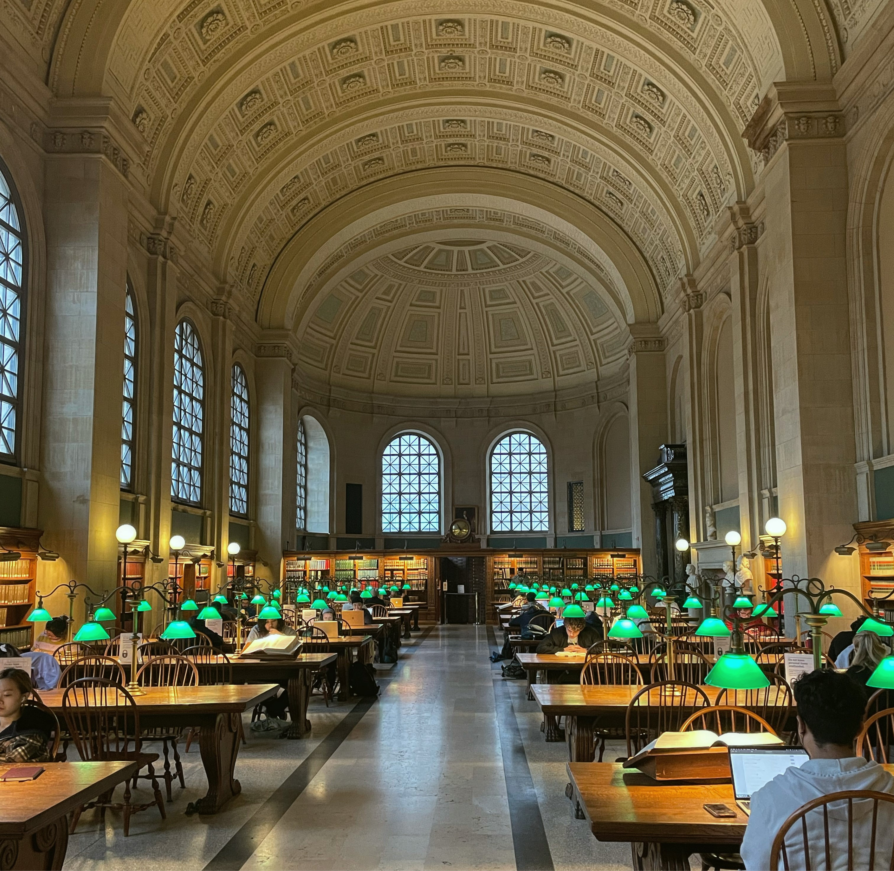

Your one-day travel plan is

Freedom Trail
Suggestion durations: 2-3 hours
Description: Learn about early Boston and U.S. history on this 2.5-mile-long trail that passes through 16 historic locations. Look out for the brick markers—starting in downtown Boston, crossing through the North End, and finishing at the famous Bunker Hill Monument in neighboring Charlestown. You'll pass by notable stops like Faneuil Hall, the Paul Revere House, and the USS Constitution frigate. -TripAdvisor

John F. Kennedy Presidential Museum & Library
Suggestion durations: 2-3 hours
Description: Relive the Kennedy era in this dynamic combination museum and library, where your visit starts with a short film and then leaves you on your own to explore a series of fascinating exhibits, including the Kennedy-Nixon debate, the Cuban Missile Crisis, the space program, 1960s campaign paraphernalia and displays about Jacqueline and other Kennedy family members. The striking, I.M. Pei-designed building overlooks the water and the Boston skyline. -TripAdvisor

USS Constitution Museum
Suggestion durations: 1-2 hours
Description: At the USS Constitution Museum you don't just learn about history, you EXPERIENCE it! Furl a a sail, fire a cannon, and scrub the decks to learn what life was like at sea over 200 years ago. Located across from the ship in the historic Charlestown Navy Yard. The Museum is private non-profit Museum and is operated separately from USS Constitution (the Ship). -TripAdvisor

Isabella Stewart Gardner Museum
Suggestion durations: 1-2 hours
Description: A Venetian palace in the middle of Boston, Gardner's home is now a museum displaying her impressive, eclectic collection of European, American and Asian art, including sculpture, paintings, furniture, ceramics and textiles. Visitors can stroll or rest in a spectacular skylit courtyard filled with plants and flowers. -TripAdvisor

Museum of Fine Arts
Suggestion durations: 2-3 hours
Description: Boston's oldest, largest and best-known art institution, the MFA houses one of the world's most comprehensive art collections and is renowned for its Impressionist paintings, Asian and Egyptian collections and early American art. -TripAdvisor

Harvard Art Museums
Suggestion durations: 1-2 hours
Description: The Harvard Art Museums, among the world's leading art institutions, comprise three museums (the Fogg, Busch-Reisinger, and Arthur M. Sackler Museums) all under one roof. Masterpieces among our more than a quarter million works include works by Vincent van Gogh, Claude Monet, Georgia O’Keefe, and Jackson Pollock; contemporary works by internationally recognized artists such as Kara Walker, Ai Weiwei, and Kerry James Marshall; and an array of remarkable objects from ancient cultures in the Mediterranean, Near East, and Far East. Our special exhibitions give us the chance to showcase an even wider range of works spanning diverse media, genres, and eras. -TripAdvisor

Boston Common
Suggestion durations: 1-2 hours
Description: Whether it's a summer picnic in the grass or winter ice-skating on Frog Pond, Boston's oldest public park is the perfect escape from the bustle of the city. -TripAdvisor

Boston Public Garden
Suggestion durations: 1-2 hours
Description: This Frederick Law Olmsted-designed park, famous for its Swan Boats, has over 600 varieties of trees and an ever-changing array of flowers. It is America's first public garden. -TripAdvisor

Fenway Park
Suggestion durations: More than 3 hours
Description: Hallowed ground to baseball fans, this century-old ballpark is the home field of the Boston Red Sox. Fans often flock to Fenway Park to catch a game over beer and hot dogs—the game season typically runs from April through October. You might want to stay till at least the eighth inning to sing “Sweet Caroline” with the crowd. The stadium is also home to the iconic Green Monster wall, a 37-foot-tall left-field wall. -TripAdvisor

TD Garden
Suggestion durations: More than 3 hours
Description: As New England's largest sports and entertainment arena, TD Garden is the home of the storied NHL's Boston Bruins and NBA's Boston Celtics franchises and hosts over 3.5 million people a year at its world-renowned concerts, sporting events, family shows, wrestling, and ice shows. -TripAdvisor

New England Aquarium
Suggestion durations: 1-2 hours
Description: Hallowed ground to baseball fans, this century-old ballpark is the home field of the Boston Red Sox. Fans often flock to Fenway Park to catch a game over beer and hot dogs—the game season typically runs from April through October. You might want to stay till at least the eighth inning to sing “Sweet Caroline” with the crowd. The stadium is also home to the iconic Green Monster wall, a 37-foot-tall left-field wall. -TripAdvisor

Boston Children's Museum
Suggestion durations: 1-2 hours
Description: Highlights of this interactive museum include the "Science Playground," featuring giant soap bubble-making tools and the "New Balance Climb," which teaches kids the laws of physics while navigating through a two-story-high maze. -TripAdvisor

Boston Tea Party Ships & Museum
Suggestion durations: 1-2 hours
Description: Sneak in another teachable moment by taking the kids to see this vessel and museum. Kids will appreciate touring an 18th-century ship (shiver-me-timbers!) and adults can dive into the Revolutionary history documented here—or take a breather in the tea room. -Maria Hart

Arnold Arboretum
Suggestion durations: 1-2 hours
Description: The Arnold Arboretum is another place of beauty within the city. While America's oldest public arboretum is a popular destination among tourists and locals alike, you won't feel crowded here. The 265 acres of sprawling trees, trails, shrubs, and vines will provide the breath of fresh air you were looking for. -TripAdvisor

Boston Public Library
Suggestion durations: 1-2 hours
Description: The main branch of the Boston Public Library opened in 1852 as the first free, publicly-funded municipal library in America. The library, which is listed on the National Register of Historic Places, houses over 20 million items. Enjoy a free tour of the building to learn about its history and marvel at the treasured artworks and architecture that spans three centuries. -TripAdvisor

Brattle Book Shop of Boston
Suggestion durations: 1-2 hours
Description: The country's oldest antiquarian bookstore, the Brattle has over 200,000 used and out-of-print books, magazines and more. -TripAdvisor

SoWa Art + Design District
Suggestion durations: More than 3 hours
Description: If Boston was a person, SoWa would be its creative side. Its independent streak. Its curiosity. Because here imagination has created a corner of the city filled with the eclectic and the unexpected. Where one-of-a-kind restaurants, galleries, and small business are run by one-of-a-kind people. Where food is sold by farmers, beer sold from barns, and art is sold where art is made. People don’t just visit SoWa. They live it. They taste it. They experience it. Explore your creative side. Explore SoWa. Originally derived from a shortening of "South of Washington," SoWa spans the area from East Brookline Street to East Berkeley Street and from Shawmut Ave to Albany Street. -TripAdvisor

Rose Kennedy Greenway
Suggestion durations: 1-2 hours
Description: The Rose Kennedy Greenway, a roof garden atop a highway tunnel, is a contemporary public park in the heart of Boston. The non-profit Greenway Conservancy maintains, programs, finances, and improves the 1.5-mile Greenway on behalf of the public. The Greenway welcomes millions of visitors annually, and the Conservancy has won numerous awards for our organic landscape care, public art, and programming. -TripAdvisor
Tatte
Type: American brunch
Description: The Rose Kennedy Greenway, a roof garden atop a highway tunnel, is a contemporary public park in the heart of Boston. The non-profit Greenway Conservancy maintains, programs, finances, and improves the 1.5-mile Greenway on behalf of the public. The Greenway welcomes millions of visitors annually, and the Conservancy has won numerous awards for our organic landscape care, public art, and programming. -TripAdvisor
Tatte
Type: Italian
Description: The Rose Kennedy Greenway, a roof garden atop a highway tunnel, is a contemporary public park in the heart of Boston. The non-profit Greenway Conservancy maintains, programs, finances, and improves the 1.5-mile Greenway on behalf of the public. The Greenway welcomes millions of visitors annually, and the Conservancy has won numerous awards for our organic landscape care, public art, and programming. -TripAdvisor
Clear Flour Bread
Type: Desserts and bakery
Description: The Rose Kennedy Greenway, a roof garden atop a highway tunnel, is a contemporary public park in the heart of Boston. The non-profit Greenway Conservancy maintains, programs, finances, and improves the 1.5-mile Greenway on behalf of the public. The Greenway welcomes millions of visitors annually, and the Conservancy has won numerous awards for our organic landscape care, public art, and programming. -TripAdvisor